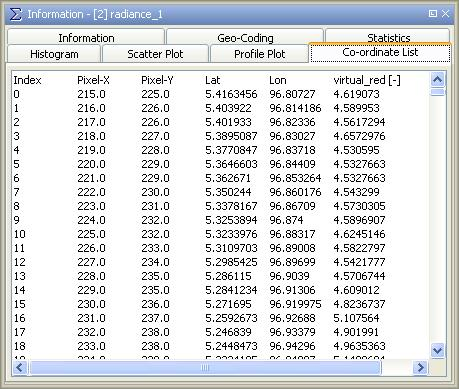

| Co-ordinate List | |
This option is available only, if a geometric shape has been defined in the current image view. The co-ordinate list enumerates information not only for each vertex but for each pixel along the current geometric shape (the transect profile in this case).
Note: A mouse right-click within the co-ordinate list area brings up a context menu with the item Copy data to clipboard. This will copy the diagram data as tabulated text to the system clipboard. The copied text can then be pasted directly into a spreadsheet application (e.g. Microsoft® Excel).
